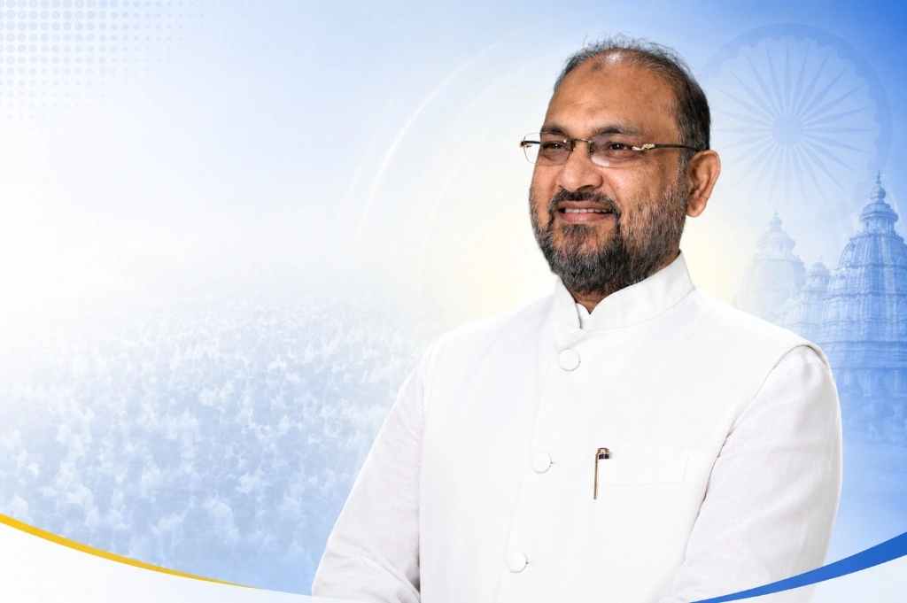

of India's mineral production value from Odisha — Iron Ore Rank 1 (55%), Chromite Rank 1 (100%), Bauxite Rank 1 (72.7%). 80% of state non-tax revenue leaves as raw material.
IBM Annual Report 2022–23 · Ch.20
43.7% of India's mineral wealth comes from Odisha, yet its people remain among the poorest in the country. That ends here. 16 unbreakable pledges to build the Odisha, Odias deserve.

of India's mineral production value from Odisha — Iron Ore Rank 1 (55%), Chromite Rank 1 (100%), Bauxite Rank 1 (72.7%). 80% of state non-tax revenue leaves as raw material.
IBM Annual Report 2022–23 · Ch.20
maternal deaths per 1 lakh births — nearly double the national average of 88. Doctor ratio: 1:1,735 — far below WHO standard. 64.2% of children aged 6–59 months are anaemic.
SRS 2021–23 · NFHS-5
secondary school dropout rate — above national average. Only 40% of Class III rural students can read a Class II text. 68% of state university faculty posts vacant.
NITI Aayog
per capita income — Odisha ₹1.86 lakh; India ₹2.19 lakh. 1,237 villages without mobile connectivity. Lakhs of Odias migrate every year for low-paid work.
Odisha Economic Survey Report · PIB India
We mine the iron ore — the cars are built elsewhere. We dig the bauxite — the aluminium goods are made elsewhere. We supply the chromite — the value is captured elsewhere. Odisha's natural endowment is extraordinary. Two decades of governance answering to outside priorities have been our betrayal. It is time for governance that answers only to Odias.
From the fields of Koraput to the docks of Paradeep. From the Adivasi villages of Mayurbhanj to the classrooms of Bhubaneswar.
Making Odisha the nation's leading agricultural state; a surplus in produce and production by 2036. A root-and-branch transformation of infrastructure, marketing, quality seed and organic fertiliser, so every farmer has the knowledge, technique and support to prosper.
The same quality of education in every village as in the city, trained teachers and proper infrastructure reaching rural classrooms. Young talent equipped with the knowledge, skills and leadership the coming decade will demand.
Women of Odisha empowered, self-reliant and placed ahead of the women of every other state. Skilled, employable and courageous, aware of their rights, and ready to take an active, leading role in Odisha's progress.
Revolutionary change in employment. New opportunities that keep our youth at home instead of migrating for work elsewhere. Every youth equipped with the knowledge and skills the coming decade demands — capable, self-reliant and secure.
The dignity and self-respect of Odisha's Adivasi people placed at the heart of its progress. Development that reaches the remotest village without uprooting anyone from their land, forest and way of life.

Mohammed Moquim
Founding President, Odisha Janta Congress Party
"Bande Utkal Janani! Jai Odisha!
Mora Priya Odishabasimaane — In a nation of 140 crore, even if we need to make just one needle, we have the strength of 140 crore hands, and together, we can create not one, but 140 crore needles. This is the power of collective effort. Odisha must harness this strength to build industries, generate employment, and create opportunities driven by its own people."
The people of Odisha have endured decades of broken expectations, weak accountability, and governance that too often serves the powerful instead of the common citizen. The Odisha Janta Congress Party has a clear conviction: Odisha belongs to Odias. Its rivers, land, forests, economy, and institutions must work for the people of this state. The era of empty announcements must end and be replaced by measurable performance.
All 30 districts. Every Odia counts.